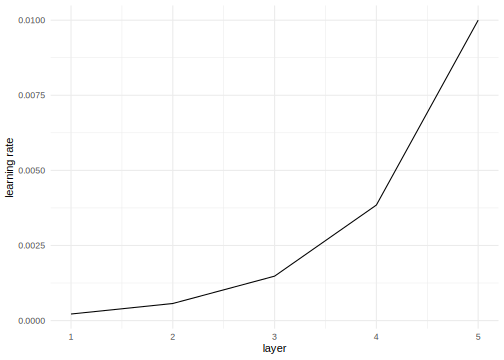
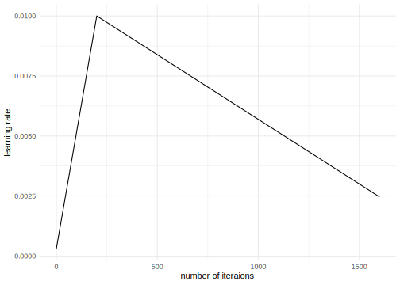

Chapter 7 Transfer Learning for NLP I
Author: Carolin Becker
Supervisor: Matthias Aßenmacher
Natural language processing (NLP) has seen rapid advancements in recent years, mainly due to the growing transfer learning usage. One significant advantage of transfer learning is that not every model needs to be trained from scratch.
In the first “wave” of transfer learning, ELMo (Embeddings from Language Models), ULMFiT (Universal Language Model Fine-tuning for Text Classification), and GPT (Generative Pretraining) were published.
These models enhanced the performance and introduced ideas like contextual embeddings, fine-tuning, and transformers in natural language processing.
7.1 Outline
First, the taxonomy of transfer learning and inductive sequential transfer learning are introduced. Inductive sequential transfer learning will give a framework for the following models and the difference between embeddings and fine-tuning will be elucidated.
Second, the models are introduced in detail within the framework of the two steps of inductive sequential transfer learning:
The Allen Institute introduced with ELMo a state-of-the-art model that can distinguish between the same word’s varying meaning in different contexts (contextual word embedding).
Howard and Ruder introduced ULMFiT, an adaption of fine-tuning in NLP.
Open AI published GPT, the first transformer model, which is an urge for the upcoming chapters. This model architecture is mainly used in the most recent developments.
Lastly, essential facts are summarized, and the following chapters are motivated.
7.2 Sequential inductive transfer learning
To better understand the models introduced in this chapter, the taxonomy of transfer learning is introduced. Primarily, sequential inductive transfer learning will be explained further.
7.2.1 Types of transfer learning
Pan and Yang (2010) divided transfer learning into different types (figure 7.1).

FIGURE 7.1: Four types of transfer learning. Source: based on (Ruder 2019)).
On the one hand, in transductive transfer learning, the source and target task are the same. There is another distinction between domain adoption (data from different domains) and cross-lingual-learning (data from different languages) (Ruder 2019).
On the other hand, there is inductive transfer learning, where the source and the target task is different. Inductive transfer learning can be divided into multi-task transfer learning and sequential transfer learning. In multi-task transfer learning, several tasks are learned simultaneously, and common knowledge is shared between the tasks. In sequential transfer learning, the source data’s general knowledge is transferred to only one task (Ruder 2019).
Inductive sequential transfer learning has led to the most significant improvements in the past. The following models in this chapter can be explained in the framework of inductive sequential transfer learning.
7.2.2 Feature Extraction vs. Fine-tuning
Sequential inductive transfer learning mainly consists of two steps: pretraining and adoption.

FIGURE 7.2: Steps in sequential inductive transfer learning. Source: based on Ruder et al. (2019).
As in figure 7.2, the model is first pretrained with the source task, and second, the model is adapted to the target task. The user can use this adopted model for the designated task (Ruder et al. 2019).
In the first step, all models are pretrained on an extensive source data set, which is, in the best case, very close to the target task (Peters, Ruder, and Smith 2019). This chapter’s pretrained language models are uni-directional models that (only) predict the next word during pretraining (figure 7.3).

FIGURE 7.3: Unidirectional language model
In second step follows the adoption on the target task. Here, the main distinction is if the pretrained model weights are kept (embedding or feature extraction) or adjusted to the target task (fine-tuning) (Peters, Ruder, and Smith 2019).
In feature extraction, single parts (sentences or characters) are extracted to a fixed-length matrix with the dimensions \(\mathbb{R}^{n} \times k\) where \(k\) is the fixed-length. This matrix represents the context of every word given of every other word. In the adoption phase, the LM’s weights do not change, and just the top layer of the model is used. The adopted model learns a linear combination of the top layer (Peters, Ruder, and Smith 2019).
On the other hand, fine-tuning adjusts the pretrained model’s weights on a specific task. This is much more flexible, as no particular adjustments are needed. The method’s disadvantage is that the general knowledge and relationship between words can get lost in the adjustment phase. This is called “catastrophic forgetting” (McCloskey and Cohen 1989; French 1999). Techniques for preventing catastrophic forgetting are freezing learning rates and regularization, mainly explained in the ULMFiT section.
Fine-tuning and feature extraction are the most extreme versions of adoption.
7.3 Models
In the following sections, the models ELMo (Peters et al. 2018), ULMFiT (Howard and Ruder 2018), and GPT (Radford et al. 2018) are presented, which have shaped the “first wave” of transfer learning before bidirectional transformers like BERT have been developed and have become popular. All models have been presented in 2018 and are inductive sequential transfer learning models.
7.3.1 ELMo - The “new age” of embeddings
In 2018, Peters et al. (2018) from AllenNLP introduced Embeddings from Language Models (ELMo). Its most significant advance compared to previous models like word2vec and Glove (chapter 3), is that ELMo can handle the different meanings of a word in different contexts (polysemy).
One good example of polysemy is the word “mouse.” In a technical context, it means the computer mouse, and in other contexts, it could mean a rodent. Previous models can just capture the semantical and syntactical characteristics of the word. ELMo can also capture the varying meaning of the word in different contexts (here: computer mouse or rodent).
ELMo can be divided into the steps pretraining and adoption:

FIGURE 7.4: Feature extraction in ELMo.
It is pretrained on the 1 Billion Word Benchmark, a standard dataset for language modeling from Google. ELMo’s model architecture is a shallowly bidirectional language model. The meaning of “shallowly bidirectional” will be explained in the following section. Afterward, the pretrained model is frozen. That means that all learning rates are set to 0. In the adoption phase, a linear combination of the internal states is learned in an additional layer. This representation is different for every task.
7.3.1.1 Pretraining: Bidirectional language model (biLM)
ELMo is based on a two-layer bidirectional LSTM, the shallow concatenation of independently trained left-to-right and right-to-left multi-layer LSTMs. Bidirectional is, in this case, misleading, as the two steps happen independently from each other:

FIGURE 7.5: Bidirectional LSTM as a pretrained model. Source: based on Peters et al. (2018) and (“Understanding Lstm Networks” 2015).
As shown in figure 7.5, \(N\) tokens are taken into a one-layer bidirectional LSTM. Every token \(t_k\) has a context-independent character-based representation called \(x_k^{LM}\). Following, the first token would be \(x_1^{LM}\), and the last one would be \(x_N^{LM}\). By either token embedding or a CNN over characters, these representations are computed. These are the first representations of the words in the model.
Additionally, there are per layer and token two additional representations; one from the forward language model and one from the backward language model.
A forward language model calculates the probability of a sequential token \(t_{k}\) at the position \(k\) with the provided history (previous tokens) \(t_{1}, \ldots, t_{k-1}\) with:
\[ \begin{aligned} p\left(t_{1}, t_{2}, \ldots, t_{N}\right)=\prod_{k=1}^{N} p\left(t_{k} | t_{1}, t_{2}, \ldots, t_{k-1}\right) \end{aligned} \] The backward language can be defined accordingly to the forward language model. It does not take the previous tokens, but the upcoming tokens, into account to calculate the joint distributions of the tokens.
\[ \begin{aligned} p\left(t_{1}, t_{2}, \ldots, t_{N}\right)=\prod_{k=1}^{N} p\left(t_{k} | t_{k+1}, t_{k+2}, \ldots, t_{N}\right) \end{aligned} \]
These context-dependent representation are notated as \(\overrightarrow{\mathbf{h}}_{k, j}^{L M}\) in the forward direction and as \(\overleftarrow{\mathbf{h}}_{k, j}^{L M}\) in the backward direction.
Peters et al. (2018) have chosen a bidirectional LSTM with two layers, shown in figure 7.6. As with every layer, two additional context-dependent representations are added. This two-layer bidirectional model has five representations per token (\(2L+1 = 5\)).

FIGURE 7.6: Bidirectional LSTM as a pretrained model. Source: based on Peters et al. (2018).
In the forward direction, a next token \(t_{k+1}\) can predict the top layer \(\overrightarrow{\mathbf{h}}_{k, L}^{L M}\) with a Softmax layer. In the biLM the directions are combined and optimized with a log likelihood:
\[\begin{array}{l} \sum_{k=1}^{N}\left(\log p\left(t_{k} | t_{1}, \ldots, t_{k-1} ; \Theta_{x}, \vec{\Theta}_{L S T M}, \Theta_{s}\right)\right. \\ \quad+\log p\left(t_{k} | t_{k+1}, \ldots, t_{N} ; \Theta_{x}, \overleftarrow{\Theta}_{L S T M}, \Theta_{s}\right) \end{array}\]
where \(\Theta_{s}\) are the parameters for the token representations and \(\Theta_{x}\) are the parameters of the Softmax-layer.
This model architecture is trained with the extensive 1B Word data set to calculate representations. For every single token \(R_k\) is calculated, which is a set of representations \(R_k\) for every token \(t_{k}\): all forward and backward context-dependent representations and also the character-based token representation \(x_k\):
\[\begin{aligned} R_{k} &=\left\{\mathbf{x}_{k}^{L M}, \overrightarrow{\mathbf{h}}_{k, j}^{L M}, \overleftarrow{\mathbf{h}}_{k, j}^{L M} | j=1, \ldots, L\right\} \\ &=\left\{\mathbf{h}_{k, j}^{L M} | j=0, \ldots, L\right\} \end{aligned}.\]
This pretrained model, including the representation for every token, is here available for download: https://allennlp.org/elmo.
7.3.1.2 Adoption: Extracting ELMo representation
After the biLM is pretrained, the model can be adapted to the target task. ELMo adopts the target by feature extraction; the pretrained model is frozen (all learning rates are set to 0), and the task-specific ELMo representations are calculated.

FIGURE 7.7: Bidirectional LSTM as a pretrained model. Source: based on Peters et al. (2018) and (“Understanding Lstm Networks” 2015).
With the target data, \(s_j^{task}\) is trained, which are soft-max-normalized weights for every layer. \(\gamma_{task}\) is a task-specific parameter that scales the entire ELMo vector. After training these parameters, ELMo has a task-specific representation for every token \(t_k\), a linear combination of the internal representations.
The ELMo specific task is formulated by
\[\mathbf{E} \mathbf{L} \mathbf{M} \mathbf{o}_{k}^{t a s k}=E\left(R_{k} ; \Theta^{t a s k}\right)=\gamma^{t a s k} \sum_{j=0}^{L} s_{j}^{t a s k} \mathbf{h}_{k, j}^{L M},\]
where \(\gamma\) is the optimization parameter which allows scaling the model, \(s_{j}^{t a s k}\) are “softmax-normalized weights,” and \(R_{k}\) is the representation of the tokens \(t_k\). For every task (e.g., question answering, sentiment analysis), the ELMo representation needs a task-specific calculation.
7.3.1.3 ELMo: Summary and further links
To summarize, ELMo is a shallowly bidirectional language model, which is a two-layer LSTM. It is pretrained on the 1 Billion word data set and then adopted with feature extraction, a linear combination of the internal states.
In this way, ELMo can create unique, character-based, and deep word representations. The unique representations are adopted to every task. This is a considerable enhancement compared to the previous embedding models, which did not take the context of the words into account (chapter 3).
According to the ELMo paper authors, ELMo saves semantic - context-dependent features - information more in the higher layer and syntactic information more in the lower layers. That is also why the weighting in every task should be different.
ELMo is suitable for every NLP task, and by adding ELMo due to Peters et al. (2018)’s paper, a relative error reduction of 6-20% can be achieved.
Interesting Links
- Exploring contextual meanings with ELMo https://towardsdatascience.com/elmo-contextual-language-embedding-335de2268604
- How to implement text classification with ELMo https://www.analyticsvidhya.com/blog/2019/03/learn-to-use-elmo-to-extract-features-from-text/
- Illustrations of ELMo http://jalammar.github.io/illustrated-bert/
7.3.2 ULMFiT - cutting-edge model using LSTMs
In the same year, Howard and Ruder (2018) proposed Universal language model fine-tuning (ULMFiT), which exceeded many of the cutting-edge models in text classification. It decreased the error by 18-24% on most of the datasets.
Also, ULMFiT can be divided into the steps of pretraining and adoption:

FIGURE 7.8: Fine-Tuning in ULMFiT.
ULMFiT is based on an AWD-LSTM (ASGD Weight-Dropped LSTM) combined with fine-tuning in the adoption where novel techniques like “discriminative fine-tuning,” “slanted triangular learning rates,” and “gradual unfreezing of layers.” were introduced. Hence, it can fine-tune a generalized language model to a specific language model for a target task.
ULMFiT follows three steps to achieve its notable transfer learning results:
- Language Model pretraining
- Language Model fine-tuning (Adoption I)
- Classifier fine-tuning (Adoption II)
7.3.2.1 Pretraining: AWD-LSTM
As language models with many parameters tend to overfit, Merity, Shirish Keskar, and Socher (2017) introduced the AWD-LSTM, a highly effective version of the Long Short Term Memory (LSTM, chapter 4). The Dropconnect Algorithm and the Non-monotonically Triggered ASGD (NT-ASGD) are two main improvements of this model architecture.
As in figure 7.9, the Dropconnect Algorithm (Wan et al. 2013) regularizes the LSTM and prevents overfitting by setting the activation of units randomly to zero with a predetermined probability of \(p\). By this, only a subset of the units from the previous layer is passed to every unit. However, by using this method also long-term dependencies can go lost. That is why the algorithm drops weights and not the activations in the end with the probability of \(1-p\). As the weights are set to zero, the drop connect algorithm reduces the information loss while reducing overfitting.

FIGURE 7.9: Dropconnect Algorithm.
To improve the optimization in the AWD-LSTM further, Merity, Shirish Keskar, and Socher (2017) introduced the Non-monotonically Triggered Average SGD (or NT-ASGD), which is a new variant of Average Stochastic Gradient Descent (ASDG).
The Average Stochastic gradient descent takes a gradient descent step like a standard gradient descent algorithm. However, it also takes the weight of the previous iterations into account and returns the average. On the contrary, the NT-ASGD only takes the averaged previous iterations into account if the validation metric does not improve for a fixed amount of steps. Subsequently, the SGD turns into an ASGD if there is no improvement for \(n\) steps.
Additionally, several other regularization and data efficiency methods are proposed in the paper:
- Variable Length Backpropaation Sequences (BPTT),
- Variational Dropout,
- Embedding Dropout,
- Reduction in Embedding Size,
- Activation Regularization, and
- Temporal Activation Regularization.
For further information, the paper of Merity, Shirish Keskar, and Socher (2017) is a great way to start.
The AWD-LSTM (language model) is trained on general-domain data like the Wikipedia data set. This trained model can be downloaded here: https://docs.fast.ai/text.html.
7.3.2.2 Adoption I: LM fine-tuning

FIGURE 7.10: Three steps of ULMFiT. Source: based on Howard and Ruder (2018).
The model is fine-tuned on the tasks’ dataset. For this purposed Howard and Ruder (2018) proposed two training techniques to stabilize the fine-tuning process:
Discriminative fine-tuning uses that distinctive layers of the LM capture distinct types of information. It is proposed to tune each layer with different learning rates. The higher the layer, the higher the learning rate:

On the other side, slanted triangular learning rates (STLR) are particular learning rate scheduling that first linearly increases the learning rate, and then gradually declines after a cut. That leads to an abrupt increase and a more extensive decay:

The learning rates \(\eta_{t}\) are calculated with the number of iterations \(T\):
\[\begin{aligned} c u t &=\left\lfloor T \cdot c u t_{-} f r a c\right\rfloor \\ p &=\left\{\begin{array}{ll} t / c u t, & \text { if } t<c u t \\ 1-\frac{t-c u t}{c u t \cdot\left(1 / c u t_{-} f r a c-1\right)}, & \text { otherwise } \end{array}\right.\\ \eta_{t} &=\eta_{\max } \cdot \frac{1+p \cdot(r a t i o-1)}{\text {ratio}}, \end{aligned}\]
where \(c u t_{-} f r a c\) is the increasing learning rate factor, \(c u t\) the iteration where the decreasing is started, \(p\) the fraction of the number of iterations that are increased or decreased, \(ratio\) is the ratio the difference between the lowest and highest learning rate
By these two changes in the learning rates depending on the iteration and the layer, information in the higher layers can learn more specific knowledge and lower layers to keep general language knowledge.
7.3.2.3 Adoption II: Classifier fine-tuning
In the last step, the language model is expanded with two common feed-forward layers and a softmax normalization at the end to predict a target label distribution. Again, two new techniques are added:
Concat pooling: As in text classification, single words are essential, concat pooling save the mean and the max representations. By that, theses signal words do not get lost. For example, good or bad are perfect indicators of sentiment. If the fine-tuning loses them, they are still saved in the GPU with concat pooling.
Gradual unfreezing: A common problem of retraining the model is losing information about the general data (the Wikipedia dataset): “catastrophic forgetting.” Hence, with gradual unfreezing, the model will be trained step by step, starting from the last layer. So first, all layers are “frozen” except the last layer. In every step, one additional layer is “unfrozen.” By that, the specific knowledge which is in the higher layers is adapted more to the target task than the first layer, which contains the most general knowledge according to the authors of the ULMFiT paper.
With these improvements, the model is trained to sentiment texts on a particular target task.
7.3.2.4 ULMFiT: Summary and further links
To sum up, ULMFiT is pretrained with the Wikitext-103 dataset on a highly efficient version of an LSTM. Then it is fine-tuned in two steps on the target task with the target data. ULMFiT achieved, in this way, a well-working form of fine-tuning in NLP. Here the last layer contains the most specific knowledge, and the first layer the most general knowledge. To contain this, the regularization methods explained are used. Although the paper is called ULMFIT for text classification, the pretrained model can also be used for any other task. Maybe the fine-tuning methods must be adapted. Due to the paper, ULMFiT could decrease the error by incredible 18-24% in text classification.
Interesting Links
Tutorial on how to use ULMFiT for Text Classification https://www.analyticsvidhya.com/blog/2018/11/tutorial-text-classification-ulmfit-fastai-library/ or https://medium.com/technonerds/using-fastais-ulmfit-to-make-a-state-of-the-art-multi-label-text-classifier-bf54e2943e83
Another students’ seminar website about ULMFiT https://humboldt-wi.github.io/blog/research/information_systems_1819/group4_ulmfit/
7.3.3 GPT - First step towards transformers
Radford et al. (2018) from Open AI published Generative Pretraining (GPT).
In the context of inductive sequential transfer learning, the training steps of GPT can be divided in:
FIGURE 7.11: Fine-tuning in GPT.
GPT is trained on the Book-corpus data set, which is a dataset of 7,000 unpublished books. The underlying model architecture is a so-called transformer. This model is then fine-tuned on the target data.
Despite some similarities, GPT has significant differences to ELMo and ULMFiT:
ELMo is based on word embeddings, whereas GPT is based on fine-tuning like ULMFiT.
GPT uses a different model architecture. Instead of the multi-layer LSTM, GPT is a multi-layer transformer decoder. This model architecture will be explained in the upcoming chapters, as it is a significant step towards the state-of-the-art NLP models.
In contrast to ELMo, that works character-wise, GPT uses tokens (subwords) from the words.
GPT is trained on a large number of data (especially the subsequent models like GPT-2 or GPT-3)

FIGURE 7.12: Basic model of GPT. Source: based on Radford et al. (2018).
As shown in figure 7.12, GPT is a uni-directional transformer-decoder-only with 12 layers with masked self-attention.
As the basic idea of transformers is discussed in the following chapters, further explanations of the functionality of the transformer model architectures will follow (chapter 8 and chapter 9)
7.3.3.1 GPT: Summary
To sum up, GPT is a multi-layer transformer-decoder with task-aware input transformations GPT is trained on the Book-Corpus data set, where the input is tokenized as a sub-word. Like the other models, GPT is unidirectional and suitable for any NLP task. This new architecture leads to improvements in many fields like 8.9% in commonsense reading, 5.7% in question answering, and 1.5% in textual entailment.
7.4 Summary
In 2018, a new generation of NLP models had been published, as transfer learning mainly pushed further enhancements from computer vision. The main advances of these models are
- due to the use of transfer learning the training for the target task needs less time and less target specific data,
- ELMo adds the contextualization to word embeddings,
- ULMFiT introduces many ideas like fine-tuning, which lowered the error rate notable, and
- GPT first uses the transformer model architecture, which cutting-edge NLP models use.
Besides, many features of these models show high potential for improvements:
- All models are not genuinely bi-directional, as ULMFiT and GPT are uni-directional, and ELMo is a concatenation of a right-to-left and left-to-right LSTM. As the human language understanding is bidirectional, bidirectional models represent the language more precisely.
- ELMo uses a character-based model input, and ULMFit uses a word-based model input. GPT and following transformer-based models use tokenized words (subwords), taking advantage of both other model inputs.
- ULMFiT and ELMo are based on LSTMs, whereas the transformer-based model architecture of GPT has many advantages like parallelization and subsequent performance improvements.
- Starting with 12 layers in GPT, the models get deeper and use more parameters and data for the pretraining.
In the next chapter, the main idea behind transformers, self-attention, is explained. More popular state-of-art models are presented in chapter 9.
References
French, Robert M. 1999. “Catastrophic Forgetting in Connectionist Networks.” Trends in Cognitive Sciences 3 (4). Elsevier: 128–35.
Howard, Jeremy, and Sebastian Ruder. 2018. “Universal Language Model Fine-tuning for Text Classification.” arXiv E-Prints, January, arXiv:1801.06146.
McCloskey, Michael, and Neal J Cohen. 1989. “Catastrophic Interference in Connectionist Networks: The Sequential Learning Problem.” In Psychology of Learning and Motivation, 24:109–65. Elsevier.
Merity, Stephen, Nitish Shirish Keskar, and Richard Socher. 2017. “Regularizing and Optimizing LSTM Language Models.” arXiv E-Prints, August, arXiv:1708.02182.
Pan, S. J., and Q. Yang. 2010. “A Survey on Transfer Learning.” IEEE Transactions on Knowledge and Data Engineering 22 (10): 1345–59.
Peters, Matthew E., Mark Neumann, Mohit Iyyer, Matt Gardner, Christopher Clark, Kenton Lee, and Luke Zettlemoyer. 2018. “Deep contextualized word representations.” arXiv E-Prints, February, arXiv:1802.05365.
Peters, Matthew E., Sebastian Ruder, and Noah A. Smith. 2019. “To Tune or Not to Tune? Adapting Pretrained Representations to Diverse Tasks.” arXiv E-Prints, March, arXiv:1903.05987.
Radford, Alec, Karthik Narasimhan, Tim Salimans, and Ilya Sutskever. 2018. “Improving Language Understanding by Generative Pre-Training.”
Ruder, Sebastian. 2019. “Neural Transfer Learning for Natural Language Processing.” PhD thesis, National University of Ireland, Galway.
Ruder, Sebastian, Matthew E Peters, Swabha Swayamdipta, and Thomas Wolf. 2019. “Transfer Learning in Natural Language Processing.” In Proceedings of the 2019 Conference of the North American Chapter of the Association for Computational Linguistics: Tutorials, 15–18.
“Understanding Lstm Networks.” 2015. Understanding LSTM Networks – Colah’s Blog. https://colah.github.io/posts/2015-08-Understanding-LSTMs/.
Wan, Li, Matthew Zeiler, Sixin Zhang, Yann Le Cun, and Rob Fergus. 2013. “Regularization of Neural Networks Using Dropconnect.” In Proceedings of the 30th International Conference on Machine Learning, edited by Sanjoy Dasgupta and David McAllester, 28:1058–66. Proceedings of Machine Learning Research 3. Atlanta, Georgia, USA: PMLR. http://proceedings.mlr.press/v28/wan13.html.